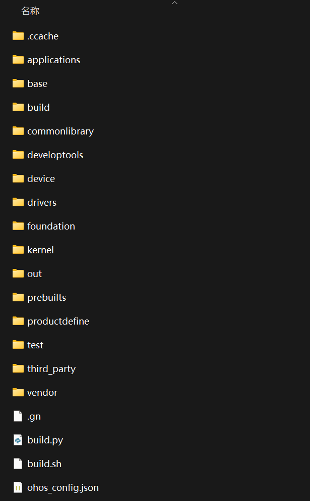
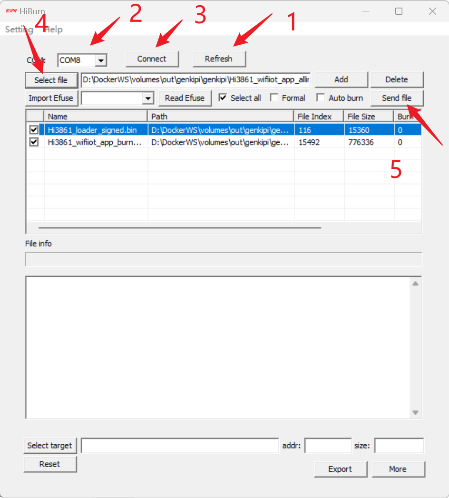
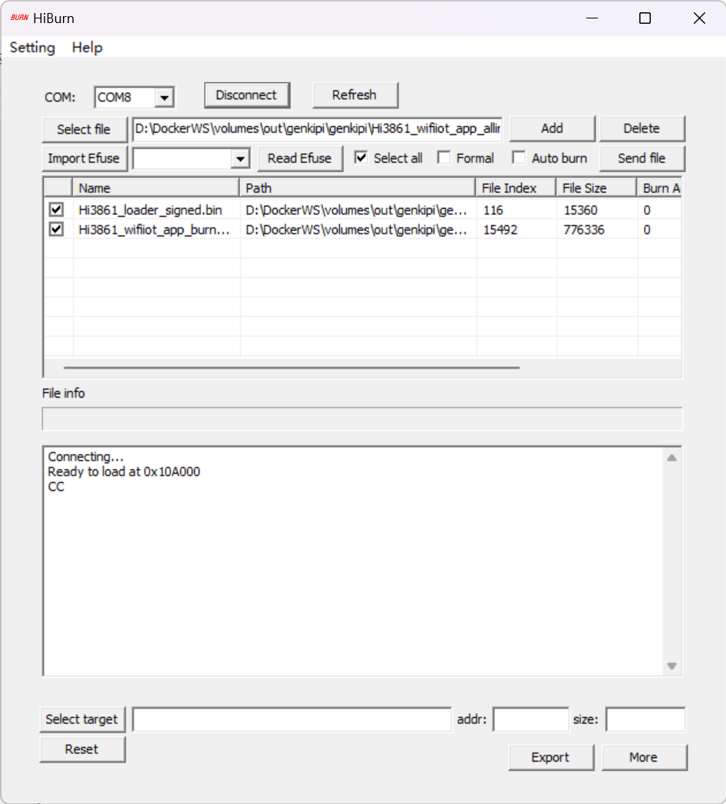
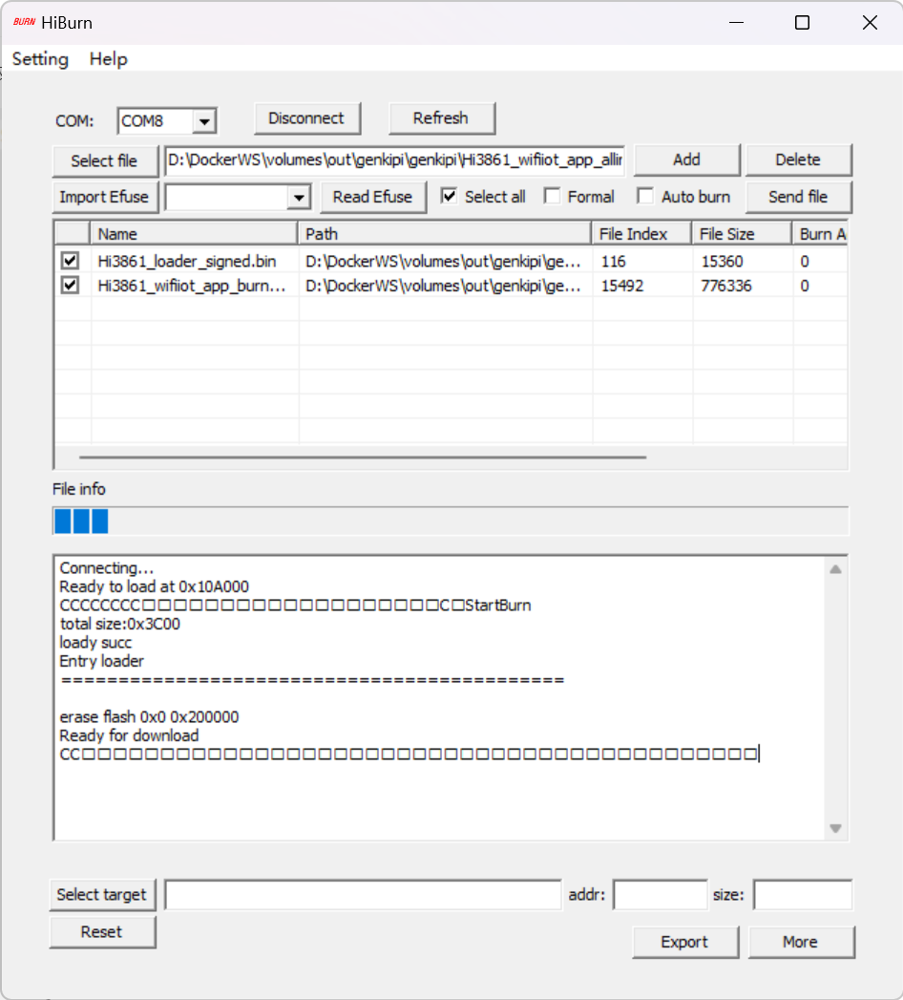
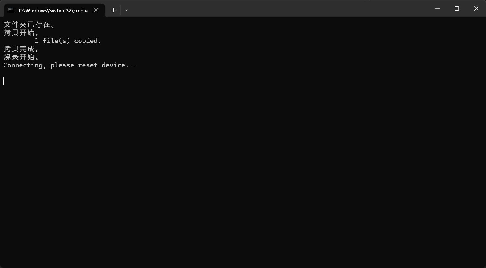
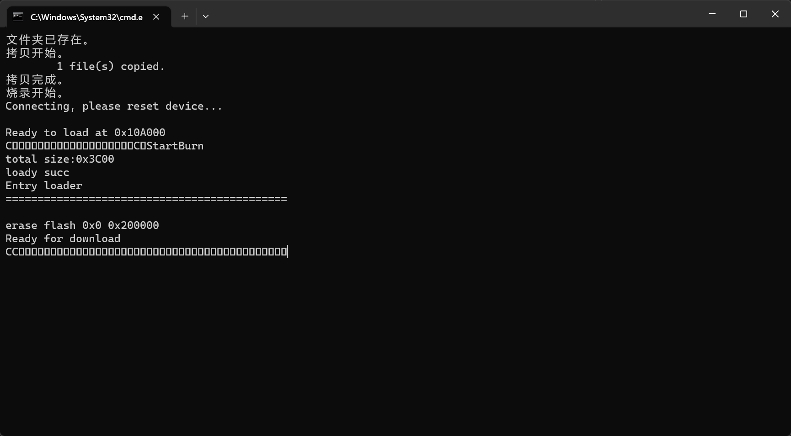
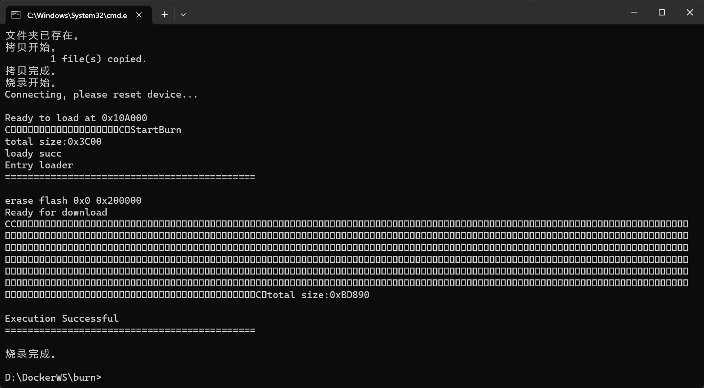

<!DOCTYPE lake>
<h2 data-lake-id="vZBDf" id="vZBDf"><span data-lake-id="ufa8a668f" id="ufa8a668f">学习目标</span></h2><ul list="u375f97f2"><li data-lake-id="u5f456c29" fid="u5dffd2eb" id="u5f456c29"><span data-lake-id="u5f8dd17f" id="u5f8dd17f">了解开发中的目录结构</span></li><li data-lake-id="uc32c0940" fid="u5dffd2eb" id="uc32c0940"><span data-lake-id="u9a749fdc" id="u9a749fdc">掌握代码的编译和烧录</span></li><li data-lake-id="u810e49ae" fid="u5dffd2eb" id="u810e49ae"><span data-lake-id="u7e868007" id="u7e868007">掌握程序的编写流程</span></li></ul><h2 data-lake-id="YzDrh" id="YzDrh"><span data-lake-id="u5845a76c" id="u5845a76c">学习内容</span></h2><h3 data-lake-id="yHl0Y" id="yHl0Y"><span data-lake-id="u0c8145b1" id="u0c8145b1">项目结构</span></h3><p data-lake-id="ucccf7e7c" id="ucccf7e7c"></p><h4 data-lake-id="viKu0" id="viKu0"><span data-lake-id="ucd58a4ea" id="ucd58a4ea">需要掌握目录</span></h4><h5 data-lake-id="LURn3" id="LURn3"><span data-lake-id="ued3d64c3" id="ued3d64c3">device</span></h5><p data-lake-id="u20486262" id="u20486262"><span data-lake-id="u3c6920f6" id="u3c6920f6">设备目录。此目录内部为开发板板和芯片目录：</span></p><span class="yuque-card-unsupported">[codeblock]</span><ul list="ucbac4fe8"><li data-lake-id="u767000bb" fid="ub5183a91" id="u767000bb"><span data-lake-id="u8c659eb0" id="u8c659eb0">board中为开发板。</span></li></ul><ul data-lake-indent="1" list="ucbac4fe8"><li data-lake-id="uc59a355d" fid="ub5183a91" id="uc59a355d"><span data-lake-id="u0213f7ff" id="u0213f7ff">board目录下的子目录表示公司。itcast表示江苏传智播客教育科技股份有限公司 。</span></li><li data-lake-id="ubf0ea884" fid="ub5183a91" id="ubf0ea884"><span data-lake-id="u9754a277" id="u9754a277">genkipi表示传智公司的开发板</span></li></ul><ul list="ucbac4fe8" start="2"><li data-lake-id="u80d00dbf" fid="ub5183a91" id="u80d00dbf"><span data-lake-id="u4bfcaa94" id="u4bfcaa94">soc中为芯片。</span></li></ul><ul data-lake-indent="1" list="ucbac4fe8"><li data-lake-id="ub35d391b" fid="ub5183a91" id="ub35d391b"><span data-lake-id="ua12636f2" id="ua12636f2">soc目录下的子目录表示公司。hisilicon表示</span><span class="lake-fontsize-11" data-lake-id="uff6e88b1" id="uff6e88b1" style="color: rgb(51, 51, 51)">海思半导体有限公司</span><span data-lake-id="uc25a8b56" id="uc25a8b56">。</span></li><li data-lake-id="u49dec158" fid="ub5183a91" id="u49dec158"><span data-lake-id="u944356a2" id="u944356a2">hi3861v100表示海斯的具体芯片。</span></li></ul><h5 data-lake-id="ydtG5" id="ydtG5"><span data-lake-id="u73761e50" id="u73761e50">vendor</span></h5><p data-lake-id="ue02f7947" id="ue02f7947"><span data-lake-id="ube3650c5" id="ube3650c5">厂商目录。此目录表示厂商对于开发板的一些配置：</span></p><span class="yuque-card-unsupported">[codeblock]</span><ul list="u60cb5e80"><li data-lake-id="ub374f885" fid="ua950176a" id="ub374f885"><span data-lake-id="udc03fe79" id="udc03fe79">vendor目录下的子目录表示公司。itcast表示江苏传智播客教育科技股份有限公司 。</span></li><li data-lake-id="ue2e978da" fid="ua950176a" id="ue2e978da"><span data-lake-id="udf7ce054" id="udf7ce054">genkipi表示传智公司下的开发板。</span></li><li data-lake-id="u7818f39c" fid="ua950176a" id="u7818f39c"><span data-lake-id="u2cfc1db5" id="u2cfc1db5">config.json：表示开发板的配置信息，需要用到什么芯片，采用系统组件有哪些。</span></li></ul><h5 data-lake-id="uv7nF" id="uv7nF"><span data-lake-id="ua971468d" id="ua971468d">out</span></h5><p data-lake-id="ud1785d85" id="ud1785d85"><span data-lake-id="u76328cb8" id="u76328cb8">编译输出目录。目录中会编译生成安装文件：</span></p><ul list="u03eec0b3"><li data-lake-id="u11e2f400" fid="u0e3594f0" id="u11e2f400"><code data-lake-id="uc52c415c" id="uc52c415c"><span data-lake-id="u97db672a" id="u97db672a">Hi3861_wifiiot_app_allinone.bin</span></code><span data-lake-id="u356c62f7" id="u356c62f7">为我们的安装文件</span></li></ul><h4 data-lake-id="repaf" id="repaf"><span data-lake-id="uf4ca6ea2" id="uf4ca6ea2">需要了解的目录</span></h4><h5 data-lake-id="MapAW" id="MapAW"><span data-lake-id="u8a210684" id="u8a210684">base</span></h5><p data-lake-id="u2d6d5d86" id="u2d6d5d86"><span data-lake-id="ub88d945c" id="ub88d945c">基础通用组件库。其中</span><code data-lake-id="u5a88cb88" id="u5a88cb88"><span data-lake-id="ue7db2ac4" id="ue7db2ac4">iothardware</span></code><span data-lake-id="u947ef770" id="u947ef770">为硬件通用驱动库。</span></p><h5 data-lake-id="INlwm" id="INlwm"><span data-lake-id="u5e0d1b01" id="u5e0d1b01">build</span></h5><p data-lake-id="ubb374384" id="ubb374384"><span data-lake-id="u8d21c98b" id="u8d21c98b">编译工具链。整个操作系统的打包，依赖于这个工具链。其中对于轻量级系统的编译，依赖的是</span><code data-lake-id="udbd2a0ee" id="udbd2a0ee"><span data-lake-id="u0168b5bc" id="u0168b5bc">lite</span></code><span data-lake-id="u5b0f0cd3" id="u5b0f0cd3">目录下的工具。</span></p><h5 data-lake-id="Qo9pa" id="Qo9pa"><span data-lake-id="u59afd0af" id="u59afd0af">foundation</span></h5><p data-lake-id="u946fc794" id="u946fc794"><span data-lake-id="u0bbeaece" id="u0bbeaece">子系统服务。提供子系统服务功能。例如communication_wifi提供wifi能力的子系统。</span></p><h5 data-lake-id="tBdBa" id="tBdBa"><span data-lake-id="uf1da4cec" id="uf1da4cec">kernel</span></h5><p data-lake-id="u4dee29a8" id="u4dee29a8"><span data-lake-id="u884e4615" id="u884e4615">内核服务。</span></p><h5 data-lake-id="vjvuv" id="vjvuv"><span data-lake-id="u9f3ad861" id="u9f3ad861">third_party</span></h5><p data-lake-id="ud72e7dd5" id="ud72e7dd5"><span data-lake-id="ud6413503" id="ud6413503">第三方开源库。</span></p><h5 data-lake-id="e1lzW" id="e1lzW"><span data-lake-id="u3cc70136" id="u3cc70136">test</span></h5><p data-lake-id="u9d95ec66" id="u9d95ec66"><span data-lake-id="u36ed9f2f" id="u36ed9f2f">兼容性测试库。</span></p><p data-lake-id="ud8d818d2" id="ud8d818d2"><br/></p><h4 data-lake-id="xPUAm" id="xPUAm"><span data-lake-id="uc1c75a2a" id="uc1c75a2a">应用开发目录</span></h4><p data-lake-id="u6861e31b" id="u6861e31b"><span data-lake-id="uc8c99816" id="uc8c99816">早期开发系统应用，我们在</span><code data-lake-id="uf21f3dc0" id="uf21f3dc0"><span data-lake-id="u4e227310" id="u4e227310">application</span></code><span data-lake-id="ue6c42f17" id="ue6c42f17">目录，通过实践和基金会沟通发展，现在有了一个比较合理的操作方式。</span></p><p data-lake-id="ua8142668" id="ua8142668"><span data-lake-id="u48caf55d" id="u48caf55d">我们系统应用开发的代码，放到具体的开发板目录中。例如我们的genkipi开发板目录在</span><code data-lake-id="ubcf06e9c" id="ubcf06e9c"><span data-lake-id="u6d201134" id="u6d201134">device/board/itcast/genkipi</span></code><span data-lake-id="uc04868c1" id="uc04868c1">。我们的应用开发放到这个目录的</span><code data-lake-id="u760bc452" id="u760bc452"><span data-lake-id="u129ad9ce" id="u129ad9ce">app</span></code><span data-lake-id="uda49546c" id="uda49546c">目录下。</span></p><p data-lake-id="u337ccff7" id="u337ccff7"><span data-lake-id="u9c221deb" id="u9c221deb">为什么需要这样设计？ </span></p><p data-lake-id="u6c43559c" id="u6c43559c"><span data-lake-id="u438d08ca" id="u438d08ca">一个芯片可以制作出很多不同类型的开发板，每种类型的开发板功能不同，导致不同开发板对应的系统应用不同，如果采用之前的</span><code data-lake-id="u39a0ce8f" id="u39a0ce8f"><span data-lake-id="u7d9ad033" id="u7d9ad033">application</span></code><span data-lake-id="u4a164ae5" id="u4a164ae5">目录，从理解上就是所有开发板都是这一套应用，这样是不合理的。</span></p><h3 data-lake-id="ENtso" id="ENtso"><span data-lake-id="u520f7153" id="u520f7153">Hello World</span></h3><p data-lake-id="ua15bd31b" id="ua15bd31b"><span data-lake-id="u7f7ba8c0" id="u7f7ba8c0">我们编写代码的</span><strong><span data-lake-id="ucc8f9190" id="ucc8f9190">根目录</span></strong><span data-lake-id="ue8f5066b" id="ue8f5066b">为</span><code data-lake-id="u9e0c7d1f" id="u9e0c7d1f"><span data-lake-id="u0e86c391" id="u0e86c391">device/board/itcast/genkipi/app</span></code><span data-lake-id="u6253af24" id="u6253af24">.</span></p><p data-lake-id="u2f2c867c" id="u2f2c867c"><span data-lake-id="u61f81205" id="u61f81205">项目创建流程如下：</span></p><ol list="u65667d1e"><li data-lake-id="u4ac35f7a" fid="u142f073c" id="u4ac35f7a"><strong><span data-lake-id="u5c879f1b" id="u5c879f1b">根目录</span></strong><span data-lake-id="u93e8dde2" id="u93e8dde2">下新建</span><code data-lake-id="uf1c867c5" id="uf1c867c5"><span data-lake-id="ued65a5ec" id="ued65a5ec" style="color: rgb(54, 70, 78); background-color: rgb(245, 245, 245)">hello_world</span></code><span data-lake-id="ud5cbb7ca" id="ud5cbb7ca" style="color: rgb(54, 70, 78); background-color: rgb(245, 245, 245)">文件夹</span></li><li data-lake-id="u57b7f05d" fid="u142f073c" id="u57b7f05d"><span data-lake-id="u2d0ab302" id="u2d0ab302" style="color: rgba(0, 0, 0, 0.87)">在</span><code data-lake-id="ua28ab484" id="ua28ab484"><span data-lake-id="u34c3e3e3" id="u34c3e3e3" style="color: var(--md-code-fg-color)">hello_world</span></code><span data-lake-id="uf13203bd" id="uf13203bd" style="color: rgba(0, 0, 0, 0.87)"> 下新建 </span><code data-lake-id="u5a7fe360" id="u5a7fe360"><span data-lake-id="ua98971d5" id="ua98971d5" style="color: var(--md-code-fg-color)">main.c</span></code><span data-lake-id="u35c6d492" id="u35c6d492" style="color: rgba(0, 0, 0, 0.87)"> 文件</span></li><li data-lake-id="u90111e24" fid="u142f073c" id="u90111e24"><span data-lake-id="u3d56b616" id="u3d56b616" style="color: rgba(0, 0, 0, 0.87)">在</span><code data-lake-id="ued68aeb1" id="ued68aeb1"><span data-lake-id="u168f7f1c" id="u168f7f1c" style="color: var(--md-code-fg-color)">hello_world</span></code><span data-lake-id="u5e011b20" id="u5e011b20" style="color: rgba(0, 0, 0, 0.87)">下新建 </span><code data-lake-id="u2fbca786" id="u2fbca786"><span data-lake-id="u57951bdd" id="u57951bdd" style="color: var(--md-code-fg-color)">BUILD.gn</span></code><span data-lake-id="ua032df1a" id="ua032df1a" style="color: rgba(0, 0, 0, 0.87)">文件</span></li><li data-lake-id="ub800fcc7" fid="u142f073c" id="ub800fcc7"><span data-lake-id="ua875e322" id="ua875e322" style="color: rgba(0, 0, 0, 0.87)">修改根目录下的</span><code data-lake-id="uca7061bf" id="uca7061bf"><span data-lake-id="ucb2f8f3e" id="ucb2f8f3e" style="color: rgba(0, 0, 0, 0.87)">BUILD.gn</span></code><span data-lake-id="u58295514" id="u58295514" style="color: rgba(0, 0, 0, 0.87)">文件</span></li></ol><h4 data-lake-id="Shlag" id="Shlag"><span data-lake-id="ud8c5cf32" id="ud8c5cf32" style="color: rgba(0, 0, 0, 0.87)">代码部分</span></h4><span class="yuque-card-unsupported">[codeblock]</span><span class="yuque-card-unsupported">[codeblock]</span><span class="yuque-card-unsupported">[codeblock]</span><h4 data-lake-id="WvluG" id="WvluG"><span data-lake-id="ub37a05ae" id="ub37a05ae">程序入口</span></h4><p data-lake-id="ubee3a61b" id="ubee3a61b"><span data-lake-id="u40056403" id="u40056403">我们采用</span><code data-lake-id="u269a3f1b" id="u269a3f1b"><span data-lake-id="u485252a2" id="u485252a2">APP_FEATURE_INIT</span></code><span data-lake-id="uae4ff949" id="uae4ff949">作为程序入口，参数为要去执行的程序名称。例如：</span></p><span class="yuque-card-unsupported">[codeblock]</span><p data-lake-id="u7c47ed10" id="u7c47ed10"><span data-lake-id="u4c69d70e" id="u4c69d70e">就是把</span><code data-lake-id="ua22b7100" id="ua22b7100"><span data-lake-id="uad9e2c4d" id="uad9e2c4d">start</span></code><span data-lake-id="ub86619e4" id="ub86619e4">函数作为程序入口。</span></p><p data-lake-id="ub186458d" id="ub186458d"><span data-lake-id="u6cb9021c" id="u6cb9021c">需要注意的是需要额外的引入一些头:</span></p><span class="yuque-card-unsupported">[codeblock]</span><ul list="uc84cf511"><li data-lake-id="u2c46b452" fid="u979abf93" id="u2c46b452"><span data-lake-id="ue28e3444" id="ue28e3444">程序的启动配置都在这些里面定义的</span></li></ul><h4 data-lake-id="STSIt" id="STSIt"><span data-lake-id="uefa7083a" id="uefa7083a">编译配置</span></h4><p data-lake-id="ua76e789a" id="ua76e789a"><span data-lake-id="u05a949e8" id="u05a949e8">OpenHarmony的构建系统采用的是GN。</span></p><p data-lake-id="u4d0f6ef1" id="u4d0f6ef1"><span data-lake-id="u1692ae89" id="u1692ae89">GN全称为</span><code data-lake-id="u513343f0" id="u513343f0"><span data-lake-id="ua2495c84" id="ua2495c84">Generate Ninja</span></code><span data-lake-id="uad1b64f9" id="uad1b64f9">。是Google开发的一种构建配置文件，用于构建和管理项目代码的构建系统。许多大型项目中采用了这个构建系统：</span></p><ul list="ub2c09367"><li data-lake-id="u57db437c" fid="ufbddbc5b" id="u57db437c"><span data-lake-id="u6bfbec7a" id="u6bfbec7a">Chromium</span></li><li data-lake-id="u7f7f1520" fid="ufbddbc5b" id="u7f7f1520"><span data-lake-id="u977476e4" id="u977476e4">Fuchsia</span></li><li data-lake-id="u12496b57" fid="ufbddbc5b" id="u12496b57"><span data-lake-id="u14d8f6e0" id="u14d8f6e0">Flutter</span></li><li data-lake-id="ubf2401bf" fid="ufbddbc5b" id="ubf2401bf"><span data-lake-id="u87e4f9e4" id="u87e4f9e4">WebRTC</span></li></ul><p data-lake-id="u3167862b" id="u3167862b"><span data-lake-id="u17cad511" id="u17cad511">BUILD.gn文件通常位于项目根目录或子目录中，用于描述项目的构建规则。它定义了编译目标、依赖项、编译选项、编译器设置等。通过编辑BUILD.gn文件，开发人员可以控制代码的编译和构建过程，包括选择要编译的文件、指定编译器和链接器选项，以及定义自定义构建规则。</span></p><p data-lake-id="u0bca6ae5" id="u0bca6ae5"><span data-lake-id="ub1f9c9ad" id="ub1f9c9ad">我们的</span><strong><span data-lake-id="u70a44f66" id="u70a44f66">根目录</span></strong><span data-lake-id="ua3e1f4cb" id="ua3e1f4cb">下的</span><code data-lake-id="ub960c970" id="ub960c970"><span data-lake-id="ua734f1c1" id="ua734f1c1">BUILD.gn</span></code><span data-lake-id="u0c9d4fd2" id="u0c9d4fd2">负责引导加载我们编写的应用。我们编写的应用中的</span><code data-lake-id="u0f51f8e2" id="u0f51f8e2"><span data-lake-id="uc0715396" id="uc0715396">BUILD.gn</span></code><span data-lake-id="u41244b5d" id="u41244b5d">主要用来配置编译的源文件已经依赖。</span></p><h3 data-lake-id="M5pTD" id="M5pTD"><span data-lake-id="uad507e6b" id="uad507e6b">程序烧录运行</span></h3><p data-lake-id="uc8f56f4b" id="uc8f56f4b"><span data-lake-id="u11c046b1" id="u11c046b1">这里介绍几种烧录方式。</span></p><h4 data-lake-id="yLoBn" id="yLoBn"><span data-lake-id="uc317a1eb" id="uc317a1eb">通过Hiburn.exe的GUI进行烧录</span></h4><p data-lake-id="ud4a19c09" id="ud4a19c09"></p><p data-lake-id="u63aedaac" id="u63aedaac"></p><p data-lake-id="u41ea5911" id="u41ea5911"><br/></p><h4 data-lake-id="h0XUa" id="h0XUa"><span data-lake-id="u2461c51b" id="u2461c51b">通过Hiburn.exe的命令行进行烧录</span></h4><ol list="ud7d45295"><li data-lake-id="u411604d3" fid="u86bfa2e6" id="u411604d3"><span data-lake-id="u707e9255" id="u707e9255">将</span><code data-lake-id="u0da79869" id="u0da79869"><span data-lake-id="ub4fddf34" id="ub4fddf34">out\genkipi\genkipi\</span></code><span data-lake-id="ucf6efcc4" id="ucf6efcc4">目录下的</span><code data-lake-id="ud18b1158" id="ud18b1158"><span data-lake-id="u5000dc63" id="u5000dc63">Hi3861_wifiiot_app_allinone.bin</span></code><span data-lake-id="u5039984b" id="u5039984b">,拷贝到Hiburn.exe同级目录下</span></li><li data-lake-id="u7ae1ec86" fid="u86bfa2e6" id="u7ae1ec86"><span data-lake-id="ue48490eb" id="ue48490eb">打开命令行，执行以下操作：</span></li></ol><span class="yuque-card-unsupported">[codeblock]</span><ul data-lake-indent="1" list="u13db9045"><li data-lake-id="u5a3b4801" fid="u8c4feb57" id="u5a3b4801"><span data-lake-id="u133c7eb7" id="u133c7eb7">com: 中表示为串口对应的端口</span></li><li data-lake-id="ud440062b" fid="u8c4feb57" id="ud440062b"><span data-lake-id="u14fc220e" id="u14fc220e">signalbaud：表示以多大的波特率烧录，921600为支持的最大波特率</span></li><li data-lake-id="ua9661bf8" fid="u8c4feb57" id="ua9661bf8"><span data-lake-id="u9a6f42fc" id="u9a6f42fc">bin：表示要烧录的文件</span></li></ul><h4 data-lake-id="ycHvD" id="ycHvD"><span data-lake-id="uf5f28a40" id="uf5f28a40">通过自定义脚本进行烧录</span></h4><ol list="ud9130967"><li data-lake-id="u8f817f62" fid="u6f2b663e" id="u8f817f62"><span data-lake-id="u78cebfb5" id="u78cebfb5">将burn_cmd目录拷贝到和项目目录同级目录。例如项目目录为Ohos_compiler，则结构如下：</span></li></ol><span class="yuque-card-unsupported">[codeblock]</span><ol list="u957b2d3a" start="2"><li data-lake-id="ubfb9de84" fid="uf2997c87" id="ubfb9de84"><span data-lake-id="u45ea35e0" id="u45ea35e0">如果要编译Ohos_compiler这个项目，在burn_cmd中打开windows的命令行，执行如下命令：</span></li></ol><span class="yuque-card-unsupported">[codeblock]</span><ul data-lake-indent="1" list="u663a443a"><li data-lake-id="u96951d4e" fid="u0d9d394b" id="u96951d4e"><span data-lake-id="u08076434" id="u08076434">Ohos_compiler为项目名称，根据实际情况进行配置。</span></li><li data-lake-id="ubdedcd02" fid="u0d9d394b" id="ubdedcd02"><span data-lake-id="u60ae4468" id="u60ae4468">3表示串口，根据实际情况进行配置。</span></li></ul><ol list="u34157b17" start="3"><li data-lake-id="ua4710e46" fid="uee327ef1" id="ua4710e46"><span data-lake-id="u12498560" id="u12498560">脚本执行过程如图：</span></li></ol><p data-lake-id="u7d0c4513" id="u7d0c4513" style="padding-left: 2em"></p><p data-lake-id="u7d180dc6" id="u7d180dc6" style="padding-left: 2em"><span data-lake-id="u3b288f50" id="u3b288f50">此时需要按下开发板的重置按钮。按下后就正式开始烧录，如下：</span></p><p data-lake-id="u5acd5ada" id="u5acd5ada" style="padding-left: 2em"></p><p data-lake-id="ue632bf19" id="ue632bf19" style="padding-left: 2em"></p><p data-lake-id="uaa784a74" id="uaa784a74"><span data-lake-id="u8e6e2307" id="u8e6e2307">​</span><br/></p><h2 data-lake-id="QvU9M" id="QvU9M"><span data-lake-id="ue6ae9015" id="ue6ae9015">作业</span></h2><ul list="u0eec8cc4"><li data-lake-id="ue9372c50" fid="u3add5865" id="ue9372c50"><span data-lake-id="u3bc1a7ab" id="u3bc1a7ab">编写hello world程序</span></li></ul><p data-lake-id="ue8140eed" id="ue8140eed"><span data-lake-id="u13fda7d9" id="u13fda7d9" style="color: rgba(0, 0, 0, 0.87)">​</span><br/></p>